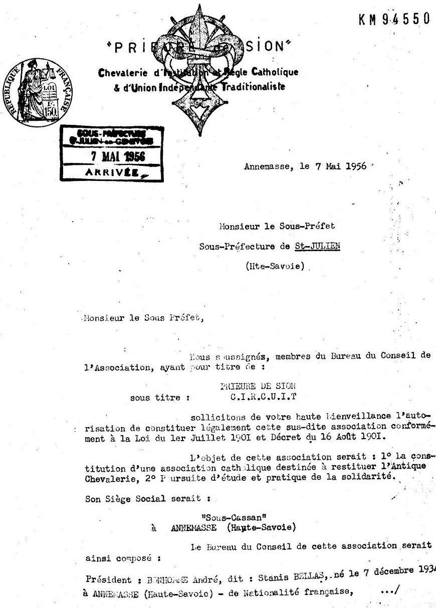
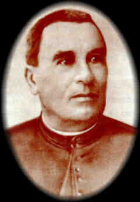

O Priorado de Sião

A Constituição do Priorado de Sião
Dan Brown anuncia, na página de abertura do Código da Vinci, que o Priorado de São é uma
organização real, fundada em 1099, e que pergaminhos depositados na Biblioteca Nacional
de Paris revelam uma lista de expoentes nas áreas de literatura, artes e ciência que teiram sido
seus membros. O Priorado certamente é uma organização real, porém é dificil dizer o que mais
pode ser afirmado a seu respeito com certeza. O grupo pode assegurar que surgiu na Françaem 1956
, quando registrou seus estatutos e os submeteu ao governo para oficialização. Durante a maior
parte de sua história contemporânea, seu principal representante foi Pierre Plantard, um homem
cujas afirmações a respeito de si mesmo foram tão confusas quanto as que fez sobre o Priorado.

Padre Bérenger Saunière
1852 - 1917
Temos, no que sizem estar contido nos Dossiês secretos e nas declarações públicas de Plantard e seus
associados, apenas um esboço da história do Priorado. Essa Organização secreta teria sido fundada
na última década do século XI por Godofredo de Bouillon. O grupo diz que Bérenger Saunière descobriu
os pergaminhos que deram origem à controvérsia em torno de Rennes-le-Cháteau obedecendo a
ordens do Priorado. E lista uma série de grão-mestres, a partir da cisão, em 1188, com os templários,
chegando a Thomas Plantard, filho de Pierre. Essas teorias são demasiado numerosas para serem
listadas, mas o Código da Vinci é baseado em uma das mais famosas e mais persistentes delas,
descrita exaustivamente em O Santo Graal e a linhagem sagrada: a de que é um antigo grardião
da linhagem sanguínea de Cristo e Maria Madalena. Outras teses sustentam que o Priorado serve como
fachada para diversas organizações esotéricas. Há ainda os que acreditam que o grupo defende
uma teocracia dos "Estados Unidos da Europa".
Todas as acusações sobre a real origem ounatureza dessa sociedade, da mais simples à mais
esdrúxula, têm sido contestadas por declarações do Priorado e de seus defensores. Parece que essa
organização existe no contexto do que um estudioso chamou de "inferno hermenêutico" -
uma terra fantasiosa de interpretações, hipóteses e evidências que, por sua pròpria abrangência e
indefinição, parece impossibitar a determinação de qualquer verdade. Talvez seja essa a essência
do contínuo apelo que o Priorado suscita: suas própria natureza. até onde sabemos, é tão indefinida como
interpretações, suas próprias esperanças, medos e fantasias.